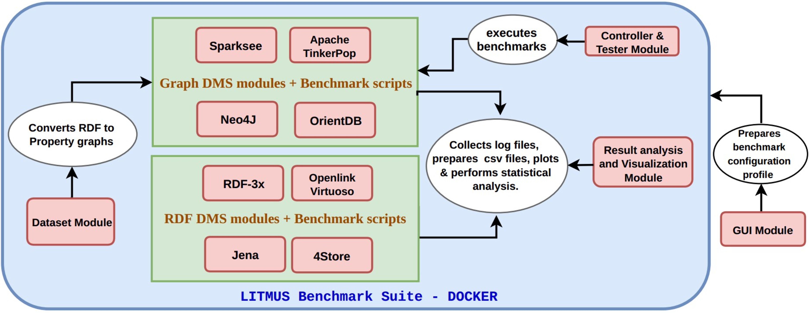
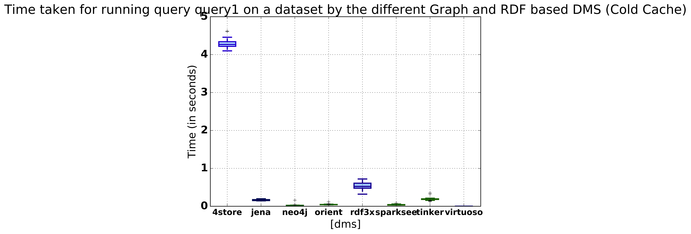
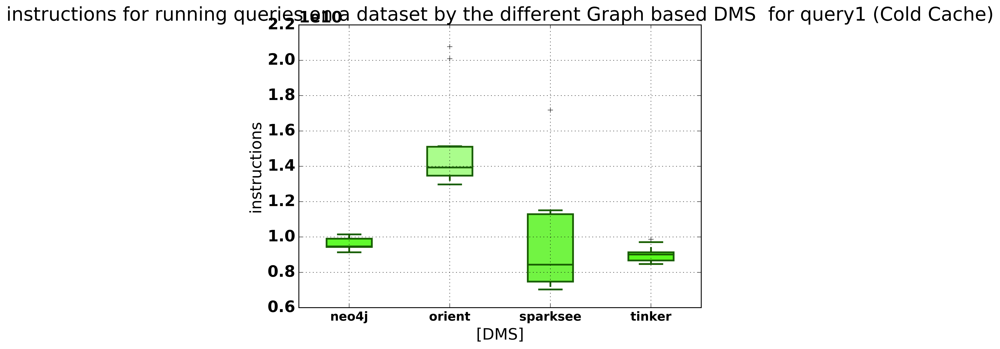
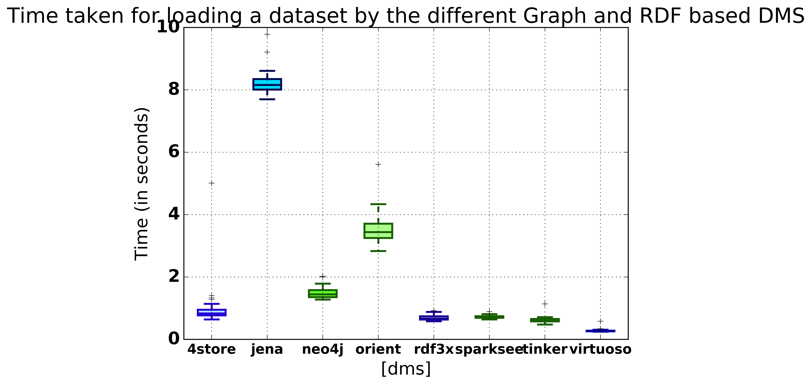

201301047@daiict.ac.in
thakkar@cs.uni-bonn.de
dubey@cs.uni-bonn.de
jens.Lehmann@cs.uni-bonn.de
auer@cs.uni-bonn.de
Keywords
Benchmarking
Linked Data
Performance Analysis
RDF Stores
Graph Stores
Automated Framework
In this paper we demonstrate the working of proposed LITMUS benchmark suite. Benchmarking is an extremely tedious task demanding repetitive manual effort, therefore it is advantageous to automate the whole process. LITMUS, is an automated benchmarking framework which supports benchmarking and comparing diverse DMSs for both RDF and property graph DMS. It also provides custom visualization (i.e. plots) support for the benchmarked DMSs against a wide range of CPU and memory-specific evaluation parameters.
In order to cope up with the consumption of Open, Linked and Big Data over the last few years, there has been exponential growth in development of various Data Management Systems. These existing DMSs can be broadly divided into two categories depending on the data model they address. 1.) Triple Stores, which employ the RDF Graph data model and 2.) Graph Databases, which frequently use the Property Graph data model.
Benchmarking is conducted to assess the performance of these DMSs with respect to a variety of scenarios, in order to decide their suitability for a given task. Benchmarking is a difficult and tedious process which involves many repetitive subtasks such as data loading, query loading, query execution, clearing the cache, etc for each participating DMS. There exist many benchmarks (a full list and description of these can be found in the related work section of the full paper [2] for task-specific application, some of which are bundled with their custom data generators [ [3] , [4] , [5] etc] (i.e. synthetic dataset generators). However, to the best of our knowledge, there is a lack of a benchmarking framework which:
In the first working prototype of LITMUS, we only offer a limited number of benchmarking tasks, such as:

In this paper we demonstrate the working of LITMUS (v0.1) using the environment setup described below.
The framework provides tools to convert the following datasets from RDF to Property Graphs, to ensure a uniform and fair benchmarking process : BSBM [3] , WatDiv [4] , Northwind 3 and DBpedia [6] .
In the current version of LITMUS, we do not consider the semantics of blank nodes (as in DBpedia and Wikidata) during the conversion of RDF graphs to PGs.
LITMUS currently allows benchmarking eight DMSs ( four RDF based and four Graph based) currently, which are Openlink Virtuoso 4 , gh-rdf-3x 5 , Apache Jena 6 , 4store 7 , Sparksee (formerly known as DEX Graph) 8 , Neo4j 9 , OrientDB 10 and Apache Tinkerpop 11 .
A total of 30 SPARQL queries were created and their Gremlin translations were also created manually. The queries can be executed in the warm cache and the cold cache (cache is cleared after every run) configuration. The cache is cleared using the UNIX command
echo 3 > /proc/sys/vm/drop_caches
. Executing the queries in two configurations allow the users to study the correlation between performance of the DMSs with respect to query, dataset-specific characteristics, the order in which they are run. The influence of factors like the query length, query size, Graph patterns on the performance of the system can be seen when run in the queries are run in warm cache configuration.
A variety of parameters and metrics are used to evaluate the performance of every DMS after the benchmarking process. The full descriptions of the catered evaluation parameters and metrics can be obtained from [2] . The following parameters are measured using the perf utility tool. Cycles, Instructions, Cache References, Cache Misses, Bus Cycles, L1 data cache loads, L1 data cache load misses, L1 data cache stores, dTLB loads, dTLB load misses, LLC loads, LLC load misses, LLC stores, Branches, Branch Misses, Context Switches, CPU migrations, Page Faults .
LITMUS also supports calculation of various statistical metrics such as arithmetic, geometric, harmonic means, median, mode, standard deviation, minimum, and maximum of each of the measured parameters. Furthermore, LITMUS allows the users to export the results in form of CSV files and Latex tables. Boxplots are generated using the matplotlib for each parameter which is measured during the benchmarking process.
We now present the benchmarking results produced for a set of selected queries using LITMUS (v0.1). The experiments were conducted on the following setting:
CPU : Intel(R) Core(TM) i5-4200M CPU @ 2.50GHz; RAM : 8 GB DDR3; L1d and L1i Caches : 32 KB; L2 Cache : 256 KB; L3 Cache : 3072 KB; RDF DMSs : Openlink Virtuoso [7.2.5], Apache Jena TDB [3.2.0] , 4store [1.1.5], gh-RDF3X; Graph DMSs : Apache TinkerPop [3.2.4], Neo4J [1.9.6], Sparksee [5.1], OrientDB [2.1.3]
The cold and warm cache query execution performance example.
Gremlin Query :
g.V().has("categoryName").categoryName
SPARQL Query :
select ?b where {?a <http://www.w3.org/2000/01/rdf-schema#label> "category" .
?a <http://northwind.com/model/categoryName> ?b .}
| 4store | Jena | Neo4j | Orient | RDF3x | Sparksee | Tinker | Virtuoso | |
|---|---|---|---|---|---|---|---|---|
| Cold Cache | 4.289 | 0.16510 | 0.02865 | 0.0489 | 0.546 | 0.0417 | 0.190 | 0.001 |
| Warm Cache | 0.0245 | 0.15870 | 0.02505 | 0.029 | 0.0002 | 0.0255 | 0.205 | 0.0008 |
Along with measuring the execution time of the various queries, the LITMUS framework also measures a variety of system parameters which are responsible for the performance. These parameters are very handy to analyze the performance. An example in this illustration would be the cache-misses for the different DMSs. The performance of cold cache suffers in comparison to that of the warm cache configuration. We observe that the cache misses for the cold cache configurations are higher when compared to the warm cache configurations. Figure 2 and Figure 3 are plots of a the system based parameters.
| 4store | Jena | Neo4j | Orient | RDF3x | Sparksee | Tinker | Virtuoso | |
|---|---|---|---|---|---|---|---|---|
| Cold Cache | 6.93e+7 | 1.45e+8 | 4.20e+8 | 7.02e+8 | 9.52e+6 | 5.25e+8 | 2.08e+9 | 5.27e+6 |
| Warm Cache | 4.38e+6 | 1.42e+8 | 3.66e+8 | 4.67e+8 | 8.02e+5 | 2.57e+8 | 1.92e+9 | 9.64e+5 |


The dataset loading performance of supported RDF and Graph DMSs. In this illustration we load the Northwind dataset in the memory for all the DMS. Table 2 summarizes the time taken in seconds to load the dataset by the different DMSs.
| 4store | Jena | Neo4j | Orient | RDF3x | Sparksee | Tinker | Virtuoso |
|---|---|---|---|---|---|---|---|
| 0.977 | 8.226 | 1.493 | 3.5374 | 0.6962 | 0.7252 | 0.6257 | 0.279 |

| 4store | Jena | Neo4j | Orient | RDF3x | Sparksee | Tinker | Virtuoso | |
|---|---|---|---|---|---|---|---|---|
| Instructions | 1.31e+9 | 1.85e+10 | 1.75e+10 | 4.33e+10 | 1.40e+9 | 1.08e+10 | 5.02e+10 | 1.48e+9 |
| Cache Misses | 2.11e+7 | 6.50e+8 | 6.44e+8 | 1.73e+9 | 1.77e+7 | 3.93e+8 | 2.05e+9 | 2.78e+7 |
| dTLB Misses | 2.81e+6 | 1.15e+8 | 1.25e+8 | 3.28e+8 | 1.55e+6 | 7.63e+7 | 3.51e+8 | 6.05e+6 |
A lot of factors contribute to the performance of a DMS. In Table 4 , it can be observed that the performance of the Jena and the Orient DMSs can be attributed to the high number of branch misses and dTLB misses.
In this paper we presented a demonstration of the proposed LITMUS benchmark suite [2] . To the best of our knowledge, LITMUS is the first of its kind open, extensible and fully automated benchmarking framework which allows user-driven benchmarking and result visualization of various RDF and Graph DMSs. The planned future work is as follows:
This work is supported by the funding received from EU-H2020 WDAqua ITN (GA. 642795)
Harsh Thakkar. Towards an Open Extensible Framework for Empirical Benchmarking of Data Management Solutions: LITMUS. In The Semantic Web - 14th International Conference, ESWC 2017, Portorož, Slovenia, May 28 - June 1, 2017, Proceedings, Part II . 256–266. (2017).
Harsh Thakkar, Yashwant Keswani, Mohnish Dubey, Jens Lehmann, and Sören Auer. Trying Not to Die Benchmarking – Orchestrating RDF and Graph Data Management Solution Benchmarks Using LITMUS . In Proceedings of SEMANTiCS 2017, Amsterdam, Netherlands. (2017).
Christian Bizer and Andreas Schultz. The berlin sparql benchmark. (2009).
Güneş Aluç, Olaf Hartig, M Tamer Özsu, and Khuzaima Daudjee. Diversified stress testing of RDF data management systems. In International Semantic Web Conference, Springer, 197-212. (2014).
Mohamed Morsey, Jens Lehmann, Sören Auer, and others. DBpedia SPARQL Benchmark – Performance Assessment with Real Queries on Real Data. Springer Berlin Heidelberg, 454–469. (2011).
Sören Auer, Christian Bizer, Georgi Kobilarov, Jens Lehmann, Richard Cyganiak, and Zachary Ives. Dbpedia: A nucleus for a web of open data. In The semantic web . Springer, 722–735. (2007).
Harsh Thakkar, Dharmen Punjani, Maria-Esther Vidal, and Sören Auer. Towards an Integrated Graph Algebra for Graph Pattern Matching with Gremlin. In Proceedings of the 28th International Conference, DEXA 2017, Lyon, France, August 28-31, 2017, Proceedings, Part I . Springer, 81–91. (2017).